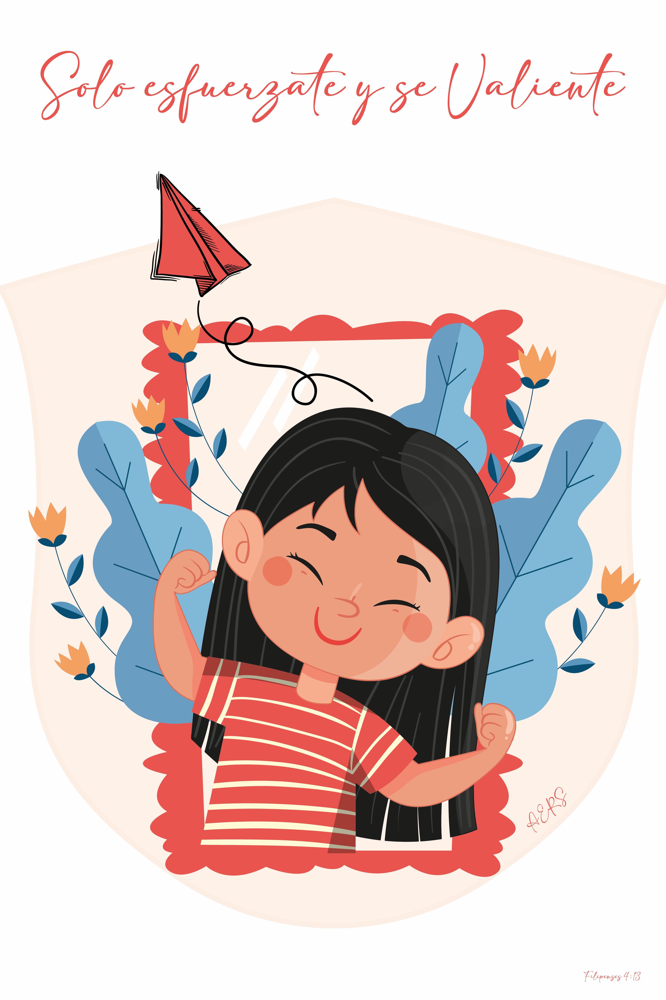

Angela Elizabeth Romero Sanabria

Mi presentación Personal
¿Quién es Angela Romero?
Una chica apasionada por el arte, el arte de la música, la fotografía, la organización y la responsabilidad.
Como lo expresó: Siendo sociable, amigable, respetuosa y honesta.
Con mucho interes de innovar y conocer cosas nuevas cada dia.
Que me motiva: Mi mas grande motivacion mi madre, que me enseño a luchar por lo quiero y por lo que es realmente necesario.
Mis Objetivos son:
- Que me conozcan por cómo soy en realidad y por mi nombre original.
- Demostrar mi esencia y demostrar que puedo lograr más.
- Ser reconocida por motivos que valen la pena un buen contenido tiene que traer una gran audiencia o público.

“Estudios realizados”
- Kinder: Kinder Nacional Sor Juana Ines de la Cruz
- De 1er a 2do año de kinder lo estudie en los años 2006-2008
- Primaria: Centro Escolar Republica de Guatemala
- De 1ro a 3er grado estudie en los años 2009-2011
- Secundaria: Centro Escolar Republica de Guatemala
- De 4to a 6to año lo estudie en los años 2012-2014
- Preparatoria: Centro Escolar Republica de Guatemala
- De 7mo a 9no año lo estudie en los años 2015-2017
- Bachillerato: Instituto Nacional Benjamin Estrada Valiente
- 1ro y 2do año de Bachillerato general lo estudie en los años 2018-2019
- Universidad: Universidad Autonoma de Santa Ana
- Actualmente cursandola pero inicie en el año 2020 y espero terminar en 2024
Pagina2
Pagina3
 WhatsApp
WhatsApp
 Facebook
Facebook
 Instagram
Instagram